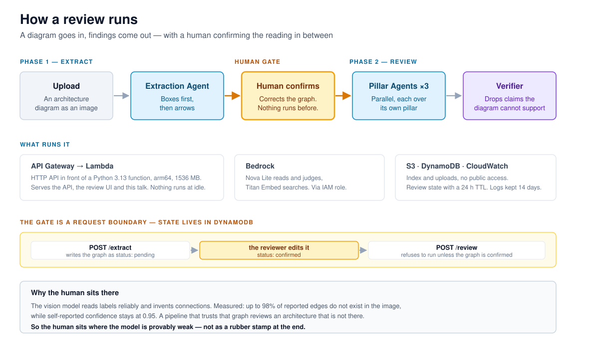
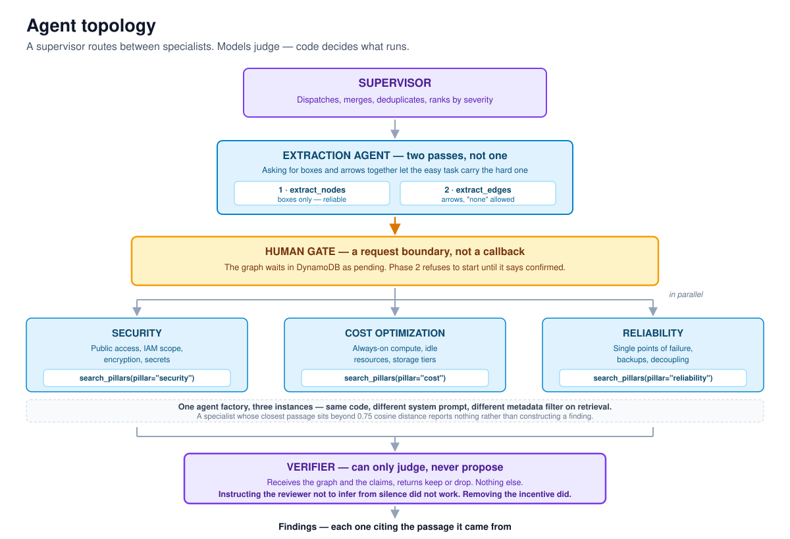

An AWS architecture diagram goes in.
Findings per pillar come out — once a human has confirmed what the model read.
Multimodal pipeline · supervisor with three specialists · human-in-the-loop · deployed on AWS
Usually one artefact exists. A diagram in a slide deck.
No Terraform state. No config export. A picture.
Checking it by hand means holding 178 best practices in your head and comparing them against that picture.
AWS Well-Architected Framework
Security 63 best practices
Cost Optimization 50
Reliability 65
───
178 across 669 pages
It takes days. So it rarely happens.

| What | Result |
|---|---|
| Box labels (OCR) | all 21 correct |
| Connections | invented |
| Self-reported confidence | 0.95 throughout |
One real diagram, 1924×1959 px, temperature 0.
It chained the boxes into a sequence that is not in the picture.
And reported 95% confidence while doing it.
Upload ↓ Extraction boxes, then arrows ↓ HUMAN CONFIRMS corrects the graph ↓ Review runs on the confirmed graph
Not a rubber stamp at the end. A gate at the one measurably weak step.
Asking for boxes and arrows together let the easy task carry the hard one.
| Case | Nodes | Edges | Invented |
|---|---|---|---|
| simple | 100% | 100% | 0% |
| complex | 100% | 60% | 50% |
Better. Not fixed. Hence the gate.
With that instruction in place, the deliberately flawless test diagram still drew findings about:
Strengthening the wording made it worse.
5 findings on a diagram whose correct answer is zero.
Specialist proposes findings
↓
Verifier can only judge
cannot propose
↓
Supported? keep ──→ report
Unsupported ──────→ drop
A separate call that receives the graph and the claims, and returns keep or drop.
| Findings | |
|---|---|
| without verifier | 5 |
| with verifier | 1 |
All four real findings on the flawed diagram survive.
Precision bought without paying recall.
"the workload is deployed across multiple availability zones"
unfiltered → reliability, 3 of 3
the cost of cross-zone traffic never appears
"backups of the database"
unfiltered → reliability, 3 of 3
whether they are encrypted is never asked

| Configuration | Found | Of 4 planted | False positives | Latency | Cost |
|---|---|---|---|---|---|
| B1 — specialists, no verification | 5.7 | 3.7 / 4 | 2.0 | 1.8 s | $0.00045 |
| B2 — one generalist, verified | 3.0 | 2.0 / 4 | 1.0 | 4.2 s | $0.00044 |
| Full pipeline | 5.0 | 3.3 / 4 | 1.7 | 3.1 s | $0.00053 |
2 of 4 against 3.3 of 4 — the gap retrieval predicted. And slower, because nothing runs in parallel.
+1.3 s, +$0.00008, and five false positives become one.
| Service | Why |
|---|---|
| Bedrock, Nova Lite | IAM role, no API key anywhere |
| Lambda, arm64 | nothing runs at idle |
| API Gateway | function URLs blocked in this account |
| DynamoDB | state across the gate, TTL 24 h |
| S3 | index + uploads, no public access |
≈ $0.0005 per review · 2,000 reviews per dollar
Upload a diagram · correct what the model misread · see the findings with their sources
Each finding cites a best practice id and a page you can look up in the actual AWS document.